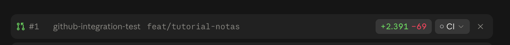

Boas-vindas 👋
Este tutorial reúne tudo o que montamos no repositório github-integration-test: Git e GitHub pelo terminal, a Supabase CLI e um app de Notas completo.
Como usar
- Siga as trilhas na ordem do menu. Cada passo tem uma checklist no final.
- Marque as tarefas conforme for fazendo. O progresso fica salvo neste navegador.
- Todo bloco de código tem um botão Copiar.
- Os quadros roxos são prompts que você pode mandar direto para o Claude.
Trilhas
| Trilha | O que você aprende |
|---|---|
| GitHub | Criar e clonar repositórios, commits, gh, pull requests |
| Supabase CLI | Login, projetos, migrations, Edge Functions, deploy pelo GitHub Actions |
| App de Notas | Banco com RLS, Auth, Storage, Realtime, Edge Function e tipos, num app real |
| Netlify | Publicar o app (em breve) |
Checklist
- Li como o tutorial funciona
Instalar as ferramentas
Tudo pelo Homebrew, no macOS.
| Ferramenta | Instalação | Login |
|---|---|---|
| Git | xcode-select --install | — |
| GitHub CLI | brew install gh | gh auth login |
| Supabase CLI | brew install supabase/tap/supabase | supabase login |
| Node.js | brew install node | — |
| Docker (opcional) | Docker Desktop ou OrbStack | — |
Depois, confira tudo de uma vez:
./scripts/check-tools.shsupabase start). Tudo neste tutorial funciona direto no projeto remoto, sem Docker.Checklist
- GitHub CLI instalada e
gh auth statusmostra ✓ - Supabase CLI instalada e
supabase projects listfunciona - Node.js instalado
Criar e clonar um repositório
Três caminhos. Todos terminam com uma pasta local ligada ao GitHub.
Opção 1: pedir ao Claude
Abra o Claude Code na pasta onde ficam seus projetos e peça:
O Claude usa o gh e o git por baixo, os mesmos comandos da opção 2. Depois, abra uma sessão nova dentro da pasta do projeto.
Opção 2: terminal com gh
gh repo create meu-projeto --private --add-readme --gitignore Node --clone
cd meu-projetoJá tem código numa pasta local?
git init
git add .
git commit -m "Primeiro commit"
gh repo create meu-projeto --private --source=. --pushOpção 3: site do GitHub + git clone
- Acesse github.com/new, dê um nome, escolha Private e marque Add a README.
- No botão verde Code, copie a URL HTTPS.
git clone https://github.com/<usuario>/meu-projeto.gitConferir
git remote -v
gh repo view --webChecklist
- Criei um repositório de teste
- Clonei e conferi o
git remote -v
Git no dia a dia
O ciclo básico: branch, mudança, commit, push.
git checkout -b feat/minha-mudanca
# ... edite os arquivos ...
git status
git add arquivo.txt
git commit -m "Descreve a mudança"
git push -u origin feat/minha-mudancaMicro commits
Prefira vários commits pequenos, cada um com uma ideia ("Adiciona tabela notas", "Adiciona login"), a um commitzão com tudo. Fica mais fácil revisar, entender o histórico e desfazer algo específico.
Desfazer
| Situação | Comando |
|---|---|
| Descartar mudança num arquivo | git restore arquivo |
Tirar do add | git restore --staged arquivo |
| Corrigir o último commit (antes do push) | git commit --amend |
| Desfazer um commit já enviado | git revert <hash> |
Checklist
- Criei uma branch e fiz um commit
- Fiz push da branch
GitHub CLI (gh)
Quase tudo do site do GitHub, pelo terminal.
gh repo list # seus repositórios
gh pr create --fill # abre PR com base nos commits
gh pr list
gh pr checks # CI do PR atual
gh run list # execuções do GitHub Actions
gh run view <id> --log-failed # só o log do que falhou
gh secret set NOME # pede o valor de forma interativagh secret set X --body valor): ele fica salvo no histórico do shell.Checklist
- Rodei
gh repo list - Abri um repo com
gh repo view --web
Pull requests
Quando o Claude abre um PR, aparece uma barra no topo da sessão. Veja como ler essa barra e o que fazer em seguida.

| Parte | Significado |
|---|---|
#1 | Número do PR. Clique para abrir no GitHub. |
feat/tutorial-notas | Branch com as mudanças, que vai entrar na main. |
+2.391 −69 | Linhas adicionadas e removidas. Clique para ver o diff. |
○ CI | Checks automáticos. ○ = nenhum rodou ou ainda está rodando; ✓ = passou; ✗ = falhou. |
× | Esconde a barra. Não fecha o PR. |
O que fazer
- Revisar: aba Files changed no GitHub, ou commit por commit na aba Commits.
- CI: se aparecer ✗, peça ao Claude: "veja por que o CI falhou e corrija".
- Ajustes: peça na mesma sessão. Os novos commits entram no mesmo PR.
- Merge:
gh pr merge 1 --squash --delete-branch # 1 commit na main
gh pr merge 1 --merge --delete-branch # mantém os micro commits- Atualizar a máquina:
git checkout main
git pullChecklist
- Entendi cada parte da barra de PR
- Revisei o diff de um PR
- Fiz o merge e atualizei a
mainlocal
Login e projetos
supabase login # abre o navegador; cole o código de verificação no terminal
supabase orgs list
supabase projects listEscolher ou criar o projeto deste repo
./scripts/projeto.sh== Seus projetos ==
1) icomtvplus-oss's Project bxpbskajkfevmvummghj us-west-2 ACTIVE_HEALTHY
2) tutorial-notas zgccfwijmnjzvxmasfiu sa-east-1 ACTIVE_HEALTHY
n) criar um projeto novoO script roda o supabase link e grava o .env e o app/.env.local com a URL e a publishable key.
Chaves
| Chave | Onde usar | Pode expor? |
|---|---|---|
sb_publishable_… | Front-end | Sim. Quem protege os dados é o RLS. |
sb_secret_… | Servidor / Edge Functions | Nunca |
link e db push: ela usa uma role temporária vinculada ao seu login.Checklist
- Fiz
supabase login - Rodei
./scripts/projeto.she vinculei um projeto
Migrations
O schema do banco versionado em arquivos SQL, em supabase/migrations/.
supabase migration new adicionar_cor_nas_notas # cria o arquivo
supabase db push --dry-run # o que será aplicado
supabase db push # aplica no projeto vinculado
supabase migration list # local x remoto
supabase db pull # traz mudanças feitas no dashboardChecklist
- Rodei
supabase migration list - Entendi a diferença entre
db pushedb pull
Edge Functions e secrets
supabase functions new minha-funcao
supabase functions deploy minha-funcao --use-api # --use-api: sem Docker
supabase functions list
supabase secrets set MINHA_CHAVE=valor
supabase secrets listDentro da função: Deno.env.get("MINHA_CHAVE").
Checklist
- Rodei
supabase functions list - Rodei
supabase secrets list
Deploy pelo GitHub Actions
A cada merge na main que altere supabase/**, o workflow aplica as migrations e publica as funções.
- Gere um token em supabase.com/dashboard/account/tokens.
- Cadastre os secrets (cada comando pede o valor):
gh secret set SUPABASE_ACCESS_TOKEN
gh secret set SUPABASE_PROJECT_REF- Teste disparando à mão:
gh workflow run supabase-deploy.yml
gh run watchChecklist
- Gerei o access token
- Cadastrei os dois secrets
- Rodei o workflow com sucesso
Rodar o app de Notas
Um app pequeno (Vite + supabase-js) que usa, módulo a módulo, as principais funcionalidades da Supabase.
cd app
npm install
npm run dev # http://localhost:5173Navegador (app/, Vite)
│ supabase-js + publishable key + token do usuário
▼
Supabase (tutorial-notas)
├── Auth ........... cadastro/login, emite o JWT
├── Postgres ....... tabela notas (RLS: cada um vê só as suas)
├── Storage ........ bucket anexos (pasta = id do usuário)
├── Realtime ....... publica mudanças da tabela notas
└── Edge Function .. exportar-notaslocalhost:5173):
supabase config diff
supabase config pushChecklist
- Apliquei o
config push - O app abriu em
localhost:5173
Banco + RLS
A publishable key fica no navegador, ao alcance de qualquer pessoa. Quem impede um usuário de ler as notas dos outros é o Row Level Security.
alter table public.notas enable row level security;
create policy "notas: ler as próprias"
on public.notas for select to authenticated
using ((select auth.uid()) = user_id);A coluna user_id tem default auth.uid(), então o app nem precisa enviá-la.
Prove que o RLS funciona
Sem login, a API responde uma lista vazia:
curl "https://zgccfwijmnjzvxmasfiu.supabase.co/rest/v1/notas" \
-H "apikey: $(grep PUBLISHABLE app/.env.local | cut -d= -f2)"
# → []Checklist
- Li a migration
criar_tabela_notas.sql - Rodei o
curle recebi[]
Auth: e-mail e senha
await supabase.auth.signUp({ email, password });
await supabase.auth.signInWithPassword({ email, password });
await supabase.auth.signOut();
supabase.auth.onAuthStateChange((evento, session) => { /* login/logout */ });A sessão fica no localStorage e o token é renovado sozinho. Os usuários aparecem em Dashboard → Authentication → Users.
Checklist
- Criei uma conta no app
- Vi o usuário no dashboard
- Saí e entrei de novo
CRUD de notas
supabase.from("notas").select("*").order("criado_em", { ascending: false });
supabase.from("notas").insert({ titulo, conteudo }).select().single();
supabase.from("notas").update({ titulo }).eq("id", id);
supabase.from("notas").delete().eq("id", id);Repare que não há nenhum .eq("user_id", …): o RLS já filtra pelo usuário logado.
Checklist
- Criei uma nota
- Editei a nota
- Vi a nota em Table Editor → notas
Storage: anexos
Bucket privado anexos. Cada usuário só acessa a pasta com o próprio id.
<user_id>/<nota_id>/<timestamp>-<arquivo>await supabase.storage.from("anexos").upload(caminho, arquivo);
await supabase.storage.from("anexos").createSignedUrl(caminho, 60); // link de 60 sChecklist
- Anexei um arquivo numa nota
- Abri o anexo pelo botão 📎
Realtime
supabase
.channel("notas-do-usuario")
.on("postgres_changes", { event: "*", schema: "public", table: "notas" }, recarregar)
.subscribe();A tabela entrou na publicação supabase_realtime pela migration. O RLS também vale para os eventos.
Checklist
- Abri o app em duas abas
- Criei uma nota numa aba e ela apareceu na outra
Edge Function: exportar notas
import { withSupabase } from "@supabase/server";
export default {
fetch: withSupabase({ auth: "user" }, async (_req, ctx) => {
const { data } = await ctx.supabase.from("notas").select("*"); // RLS do usuário
// ... monta o Markdown
}),
};No app: supabase.functions.invoke("exportar-notas"). O título do arquivo vem do secret TITULO_EXPORTACAO.
Checklist
- Cliquei em "Exportar .md" e baixei o arquivo
- Vi os logs em Edge Functions → exportar-notas
Tipos + fluxo completo
cd app && npm run types # gera src/database.types.ts a partir do bancoO fluxo de uma mudança, do início ao fim
git checkout -b feat/cor-nas-notas
supabase migration new adicionar_cor_nas_notas
# edite o SQL
supabase db push --dry-run
cd app && npm run types
git add . && git commit -m "Adiciona cor nas notas"
gh pr create --fill
# merge na main → o Actions aplica a migrationChecklist
- Rodei
npm run types - Fiz uma mudança completa: migration → PR → merge
Netlify (em breve)
A próxima etapa: publicar o app e este tutorial no Netlify, com deploy automático a cada merge e preview de cada PR.
- Instalar a Netlify CLI e fazer
netlify login - Criar o site e o
netlify.toml - Configurar as variáveis da Supabase no Netlify
- Ligar o deploy ao GitHub
Checklist
- Vi o que vem a seguir